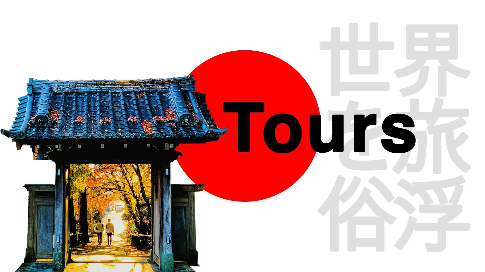
Ποιές περιοχές να επισκεφθείτε;
Η Ιαπωνία είναι ένα μέρος που αξίζει να επισκεφτείτε. Από τους φουτουριστικούς ουρανοξύστες μέχρι τα ήσυχα δάση με μπαμπού και τους γαλήνιους ναούς. Δεν υπάρχει προορισμός παρόμοιος με την Ιαπωνία.
Το φαγητό είναι απίστευτο, οι άνθρωποι είναι εξαιρετικά ευγενικοί και έχουν ένα από τα πιο αποτελεσματικά συστήματα δημόσιων συγκοινωνιών στον κόσμο.
Η Ιαπωνία έχει πολλά να προσφέρει, αλλά από πού πρέπει να ξεκινήσετε; Αυτές είναι οι επιλογές μας για τα καλύτερα μέρη για επίσκεψη στην Ιαπωνία, ιδανικά για το πρώτο ή δεύτερο ταξίδι σας στη χώρα.
💡Top tip: Σας συνιστούμε να αγοράσετε ενιαίο εισιτήριο για τον Ιαπωνικό σιδηρόδρομο κατά την άφιξη σας στην χώρα ώστε να εξοικονομήσετε χρήματα και να έχετε πρόσβαση σε όλη την χώρα. Διαβάστε τον οδηγό της Ιαπωνικής σιδηροδρομικής γραμμής για πιο λεπτομερή ενημέρωση
Kyoto
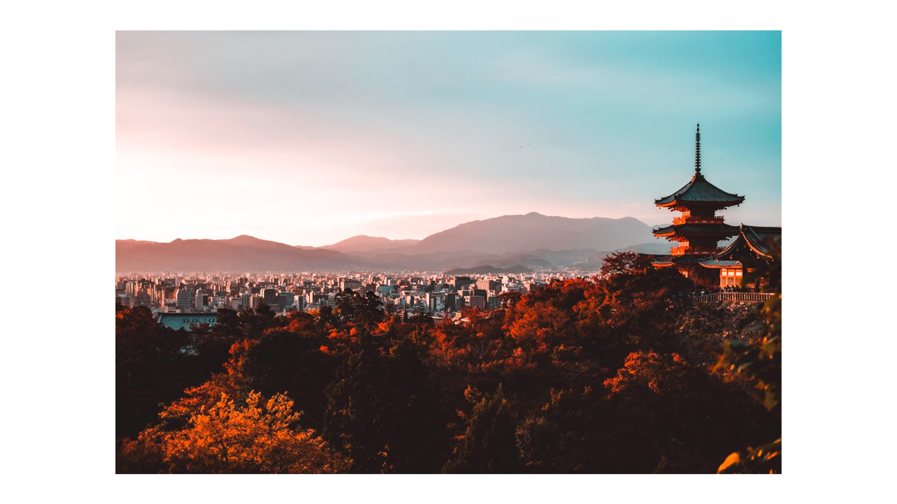
Αν έχετε χρόνο μόνο για έναν προορισμό της Ιαπωνίας, αναμφισβήτητα το Κιότο θα πρέπει να είναι η επιλογή σας. Η πόλη του Κιότο φωτογραφίζει την παραδοσιακή Ιαπωνία, όπως την έχουμε φανταστεί: η γκέισα με έντονο πορφυρό κιμονό σας υποδέχεται για τσάι στο γραφικό ξύλινο σπιτάκι, πανέμορφα δάση από μπαμπού, ναοί και ιερά σε χρυσές, ασημένιες και κόκκινες αποχρώσεις, κήποι εξάσκησης του πολυπόθητου Ζεν, γλέντια με άρωμα παράδοσης και ιαπωνικής κουλτούρας, τελετές τσαγιού και αγορές με πληθώρα από ενδιαφέροντα προϊόντα.
Τα υψηλά σημεία στο κέντρο του Κιότο μπορεί να είναι δύσβατα, οπότε κατευθυνθείτε στις γειτονιές γύρω από τα βουνά όπου θα βρείτε στενούς λιθόστρωτους δρόμους, παλιά ξύλινα σπίτια, μοναχούς με τη συντροφιά ψαλμωδίας και πολλούς ναούς και ιερά που θα σας συνεπάρουν γαλήνια.
Το Γκιόν είναι το μέρος που θα εντοπίσετε τη γκέισα, το Higashiyama έχει πολλούς πανέμορφους ναούς για να εξερευνήσετε και το Arashiyama, στους δυτικούς λόφους, είναι μια από τις πιο παραδοσιακές γειτονιές γεμάτες με μπαμπού, ιδιόρρυθμους ναούς και πίθηκους.
Για να μπορέσετε να χαρείτε όσα προσφέρει αυτός ο μαγευτικός προορισμός θα χρειαστείτε τουλάχιστον 3 εβδομάδες που θα αφιερωθούν σε περιηγήσεις στα αξιοθέατα και περιπλάνηση. Το Κιότο είναι ένα από τα κορυφαία τουριστικά σημεία της Ιαπωνίας οπότε φροντίστε να επισκεφτείτε τους λαϊκούς ναούς το πρωί καθώς γεμίζουν.
Τι πρέπει να κάνετε στο Κιότο:
Περπατήστε σε έναν μαγευτικό χώρο μέσα από τις στιβαρές κόκκινες πύλες του τόπου Fushimi Inari
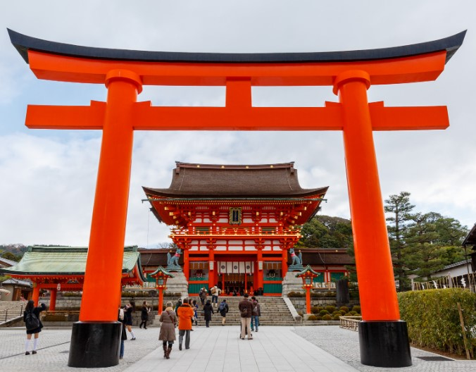
Μάθετε τη τύχη σας από ένα μηχάνημα αυτόματης πώλησης στο Ναό Kinkaku-ji ( ο Χρυσός Ναός)
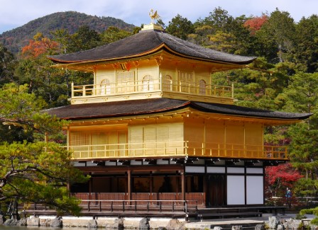
Mεταβείτε με το τρένο στο χωριό Kibune, περπατήστε στην κοιλάδα προς τον όμορφο ναό Kurama-dera
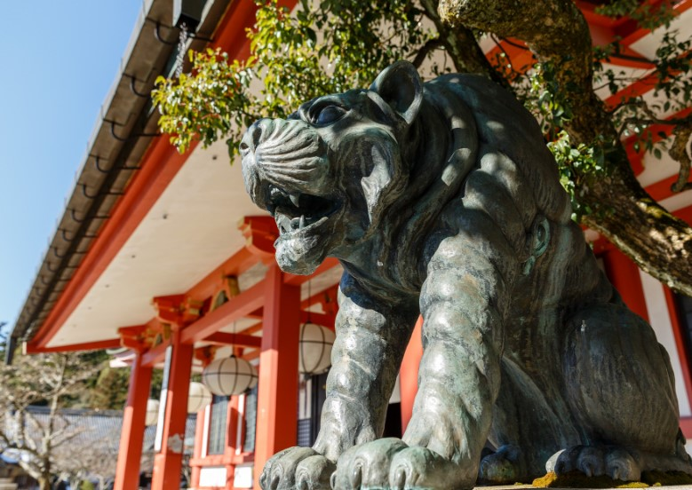
Αποδράστε από τους πολυσύχναστους δρόμους του Γκιόν στο μαγευτικό Yasaka-jinja τη νύχτα
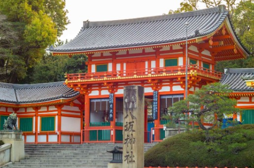
Tokyo
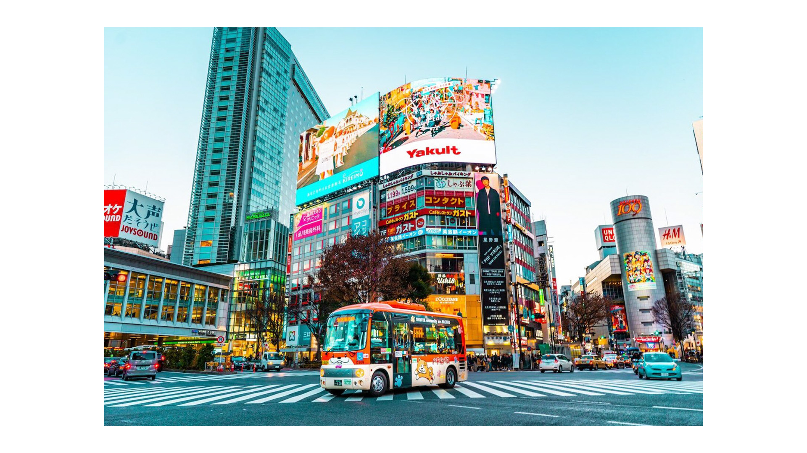
Αν το Κιότο είναι η καρδιά της παράδοσης στην Ιαπωνία, το Τόκιο είναι η επιτομή του υπερσύγχρονου στοιχείου. Εντυπωσιακοί ουρανοξύστες, θορυβώδεις στοές, γεμάτες διαβάσεις πεζών, εκκεντρική νεανική μόδα. Τα εστιατόρια είναι τόσα πολλά και με τόσο νόστιμες και ιδιαίτερες γεύσεις που μπορούν να ικανοποιήσουν γευστικά ακόμη και τους πιο απαιτητικούς χορτοφάγους.
Το Τόκιο φιλοξενεί επίσης μερικές από τις πιο περίεργες δραστηριότητες που θα μπορούσατε να σκεφτείτε. Από τις θεματικές καφετέριες (γάτες, κουκουβάγιες, ρομπότ, κατσίκες) σε στοές με σόου έως και cos-play go-karting.
Η πόλη είναι συγκλονιστική, με διαφορετική ομορφιά από εκείνη το Κιότο. Νότες υπερσύγχρονες, ρυθμοί γεμάτης ζωής, φαγητό εξαιρετικό και πολλές ακόμη μικρές λεπτομερείς που θα κάνουν την εμπειρία αυτού του ταξιδίου μοναδική.
Τι πρέπει να κάνετε στο Τόκιο:
Να ατενίσετε τον νυχτερινό ορίζοντα δωρεάν από το κτίριο της μητροπολιτικής κυβέρνησης του Τόκιο στο Shinjuku
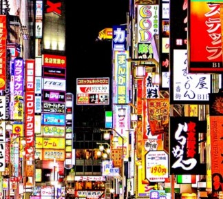
Να επισκεφτείτε τη λαμπρή Disney Sea (ένα από τα δύο πιο δημοφιλή πάρκα της Disney στον κόσμο!)
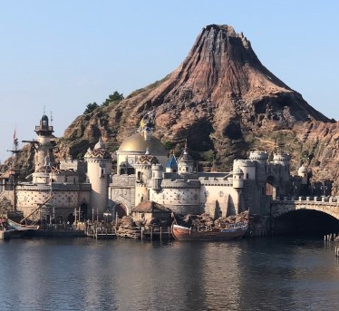
Φαγητό σε ένα μικροσκοπικό εστιατόριο στην ατμοσφαιρική αλλά και στην πιο ήσυχη Memory Lane

Να ντυθείτε Super Mario και να οδηγήσετε ένα go-kart στους πραγματικούς δρόμους. Μοναδική εμπειρία!

Takayama
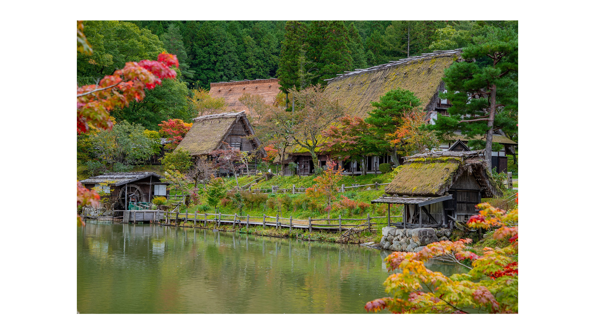
Η Takayama είναι μια πανέμορφη μικρή πόλη στην άκρη των Ιαπωνικών Άλπεων και ένα από τα καλύτερα μέρη στην Ιαπωνία με την παραδόξως μικρότερη επισκεψιμότητα. Θα αγαπήσετε τους περιπάτους στο ιστορικό κέντρο γεμάτο από παραδοσιακά ξύλινα σπιτάκια, πολύχρωμα ιερά, όμορφα διαμορφωμένα δέντρα και φωτεινά κόκκινα γεφύρια πάνω από τον ποταμό που συνθέτουν ένα τοπίο εξαιρετικής και ιδιαίτερης ομορφιάς. Υπάρχουν ποικίλες δραστηριότητες που μπορείτε να κάνετε στην Takayama, παρακάτω σας παραθέτουμε μερικές:
Τι πρέπει να κάνετε στην Takayama:
Ποδηλασία στην ύπαιθρο με το Satoyama Experience για να ανακαλύψετε την τοπική ομορφιά του τόπου
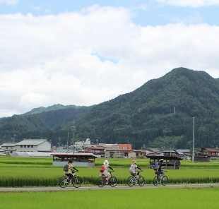
Να επισκεφθείτε το ονειρικό χωριό Hida Folk Village για να δείτε τα παραδοσιακά σπιτάκια δίπλα στη λίμνη
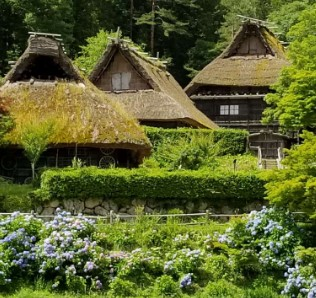
Να κολατσίσετε με mitarashi-dango (μπάλες ρυζιού από σόγια) σε έναν πάγκο του δρόμου

Να δείτε τα υπερβολικά μεγάλα εκθέματα στην αίθουσα του Φεστιβάλ Floats πάνω στην γέφυρα
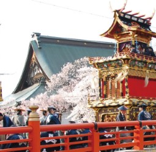
Hakone
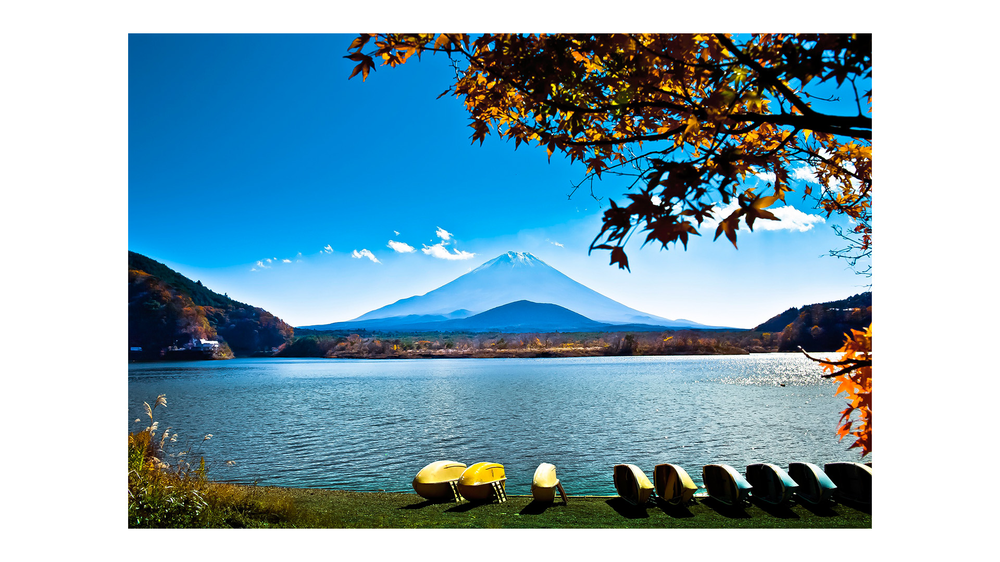
Το όρος Fuji, πάνω από την λίμνη Ashi είναι από τους πιο περιζήτητους προορισμούς για επίσκεψη στην Ιαπωνία, αλλά αυτό το υπέροχο σημείο μπορεί να είναι κρυμμένο από σύννεφα που εμποδίζουν την μαγευτική θέα του βουνού. Υπάρχουν αρκετά μέρη από τα οποία μπορείτε να δείτε το βουνό, αλλά αποφασίσαμε ότι το Hakone είναι το ιδανικότερο διότι είναι εύκολο να φτάσετε από το Τόκιο και υπάρχουν πολλά ενδιαφέροντα πράγματα να κάνετε στην περιοχή.
Το Hakone έχει διασκεδαστικούς τρόπους μεταφοράς στα αξιοθέατα όπως τρένο, λεωφορείο, πειρατικό σκάφος και τελεφερίκ!
Τι πρέπει να κάνετε στην Hakone:
Να δείτε το Όρος Fuji από τη λίμνη ή το τελεφερίκ δίπλα απο τις ανθισμένες αμυγδαλιές
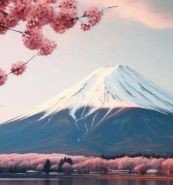
Να διαμείνετε σε ένα ryokan και να απολαύσετε ένα περίτεχνο δείπνο
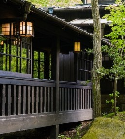
Να απολαύσετε ένα μαύρο αυγό μαγειρεμένο στις θερμές πηγές του ηφαιστείου Owakudani
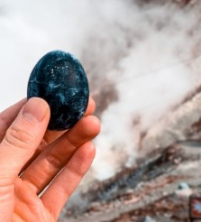
Να κάνετε μπάνιο σε ένα ονσέν ή αλλιώς στις πιο μαγευτικές ιαματικές πηγές της Ιαπωνίας
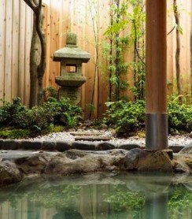
Nikko
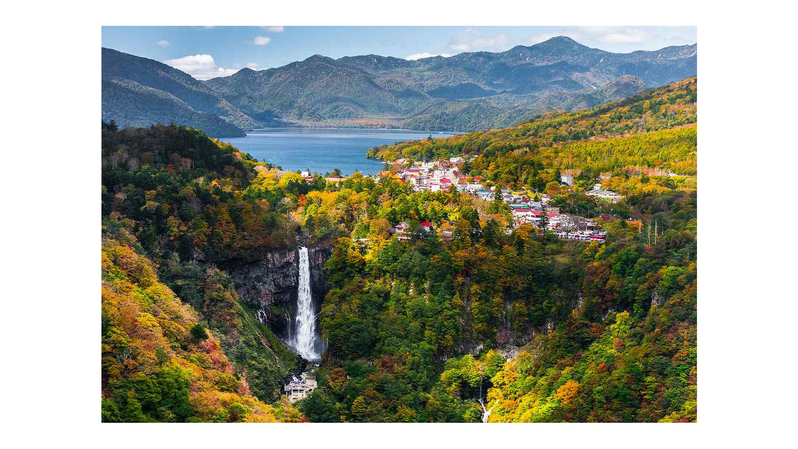
Το Nikko είναι μια πόλη-ναός και παγκόσμια κληρονομιά της UNESCO μέσα στα βουνά, λίγες ώρες βόρεια του Τόκιο και φαντάζει ως δροσερή απόδραση αναζωογόνησης από την πόλη.
Οι ναοί και τα ιερά με τις πύλες τους και τα πέτρινα φανάρια που καλύπτονται από πέτρα είναι διάσπαρτα στις πλαγιές του δάσους. Το κύριο αξιοθέατο είναι το ιερό Toshogu, ένα εντυπωσιακό συγκρότημα με περισσότερα από δώδεκα πλούσια διακοσμημένα κόκκινα και χρυσά κτίρια ανάμεσα σε τεράστιους αρχαίους κέδρους. Για να αποφύγετε τη πολυκοσμία, κατευθυνθείτε σε ένα από τα πιο ήσυχα ιερά.
Μπορείτε να επισκεφθείτε το Nikko με ημερήσια εκδρομή από το Τόκιο, αλλά αξίζει να περάσετε μια ή δύο νύχτες για να εξερευνήσετε ένα από τα ωραιότερα μέρη της Ιαπωνίας, γεμάτο μονοπάτια πεζοπορίας, λίμνες, καταρράκτες και ιαματικές πηγές. Η περιοχή είναι γνωστή για τα ολοζώντανα χρώματα του φθινοπώρου.
Τι πρέπει να κάνετε στo Nikko:
Να επισκεφτείτε το ιερό Toshogu νωρίς
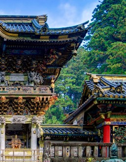
Να εξερευνήσετε το μαυσωλείο Taiyuinbyo
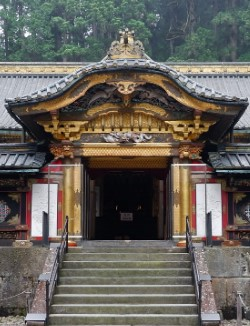
Να φωτογραφίσετε τη φωτεινή κόκκινη γέφυρα Shinkyo
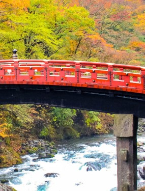
Να κάνετε πεζοπορία μέχρι το βουνό στο γαλήνιο ιερό Takino
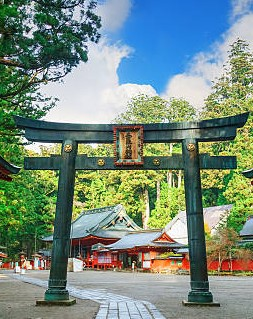
Και πολλά ακόμη...
Αυτό το ταξίδι στην Ιαπωνία υπόσχεται να σας χαρίσει αξέχαστες αναμνήσεις και να σας φέρει κοντά σε έναν μοναδικό συνδυασμό παράδοσης και νεωτερικότητας. Από τους πολυσύχναστους δρόμους του Τόκιο μέχρι τους ήσυχους ναούς του Κιότο και τα γραφικά τοπία του Nikko, κάθε μέρα θα είναι γεμάτη με νέες εμπειρίες και εκπλήξεις. Ετοιμαστείτε να ζήσετε την ιαπωνική φιλοξενία, να δοκιμάσετε εκλεκτές γεύσεις και να εξερευνήσετε μέρη που θα μείνουν χαραγμένα στη μνήμη σας για πάντα. Αυτό το ταξίδι είναι η ιδανική ευκαιρία να ανακαλύψετε την ομορφιά και την ποικιλομορφία της Ιαπωνίας, αφήνοντάς σας με μια βαθιά εκτίμηση για αυτήν την μοναδική χώρα.